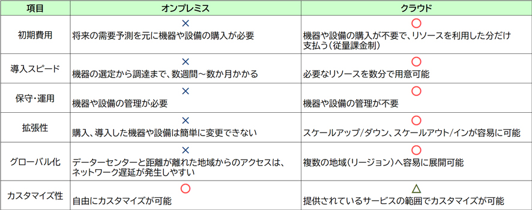

🏢 オンプレミスとクラウド CLF
AWSを学ぶ出発点として、オンプレミス（従来型の自社設備）とクラウドの違い、そしてクラウドが提供するメリットを理解しましょう。CLF試験では「なぜクラウドに移行するのか」「コスト面での優位性」がよく問われます。
オンプレミスとは
オンプレミスとは、自社で設備を保有し、自社で運用・管理を行うITインフラストラクチャ（ITインフラ）環境です。クラウドと比較すると、機器選定・設置・設備管理などを自社で実施する必要があり、機器への対応や運用担当者確保などの運用負荷が発生します。機器は容易に変更しにくい、必要変動への対応が難しいため、過剰投資や性能不足が生じる可能性があります。
クラウドとは
AWSなどのクラウドコンピューティング（通称：クラウド）とは、インターネットなどのネットワーク経由で、サーバーやストレージなどのITリソースにアクセスして利用できる環境のことです。クラウドサービスを利用することによって以下のメリットが得られます。
リソースを利用した分だけ料金を支払う（従量制）ため、自社設備を購入・管理するオンプレミスに比べて、大幅に初期費用を削減できます。
数分単位でリソースを用意できるため、大幅な変化が起きてもスケールアップ/ダウン（リソースの処理能力の増加）やスケールアウト/イン（リソースの個数の増加）で対応できます。
スピードが向上が必要な環境を短時間で構築できるため、開発や検証を迅速に開始できます。
クラウドサービスは複数の地域（リージョン）で展開しており、世界中でアプリケーションを展開し低遅延でサービスの提供が可能です。
オンプレミスとクラウドの比較

クラウドコンピューティングのサービスモデル
クラウドコンピューティングの代表的なサービスモデルには、IaaS、PaaS、SaaSがあります。
OSやミドルウェア、ランタイムなどのアプリケーション実行環境を含むプラットフォームを提供するサービスです。ユーザーはインフラを意識せずに、アプリケーションの開発・導入ができます。
例：Amazon EC2（仮想サーバー）
OSやミドルウェア、ランタイムなどのアプリケーション実行環境を含むプラットフォームを提供するサービスです。ユーザーはインフラを意識せずに、アプリケーションの開発・導入ができます。
例：AWS Elastic Beanstalk
アプリケーションを含むすべての機能を提供するサービスです。ユーザーは機能のオプションを設定するだけでアプリケーションを利用できます。
例：Gmail、Salesforce、Microsoft 365
| 責任範囲 | オンプレミス | IaaS | PaaS | SaaS |
|---|---|---|---|---|
| アプリケーション | ユーザー | ユーザー | ユーザー | 提供側 |
| データ | ユーザー | ユーザー | ユーザー | ユーザー |
| ランタイム | ユーザー | ユーザー | 提供側 | 提供側 |
| OS | ユーザー | ユーザー | 提供側 | 提供側 |
| 仮想化/ハイパーバイザー | ユーザー | 提供側 | 提供側 | 提供側 |
| 物理インフラ | ユーザー | 提供側 | 提供側 | 提供側 |
TCO（総所有コスト）
システムの機器の購入から廃棄までにかかる合計コストのことです。クラウドでは総すべてのコスト（TCO）に対して大きなメリットがあります。例えば、機器や設備の初期投資・管理コストが不要であることは、TCOを削減します。クラウドの利用によって浮いた費用や時間を、ビジネス分析やプロジェクト管理、開発業務などに充てることで、より付加価値の高い作業に集中できます。
- IaaS → EC2のようにOSより下はAWS管理（仮想化・物理インフラ）
- PaaS → OS・ミドルウェアまでAWS管理、アプリ・データはユーザー
- SaaS → アプリまで提供済み、ユーザーは設定・データ管理のみ
- クラウドのコストモデルは「従量制（使った分だけ）」 → 初期投資不要
- TCO（総所有コスト）削減がクラウド移行の主要メリットのひとつ
- 「オンプレミスからクラウドへ移行するメリット → 初期費用削減・スケーラビリティ・俊敏性・グローバル展開」